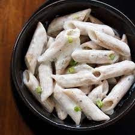

White Sauce Pasta (also referred to as White Pasta) is one of the most popular and easiest pasta recipes that you can make at home. In this White Sauce Pasta Recipe, I am sharing an easy way to make a restaurant style white sauce (or béchamel sauce) in which cooked penne pasta is tossed. The recipe comes together in 30 minutes and makes for a comforting brunch or lunch.
Ingredients
For White Sauce
- 2 tablespoons Butter – salted or unsalted
- 1 tablespoon whole wheat flour or 2 tablespoons all-purpose flour
- 1 cup whole milk – cold or chilled
- ¼ teaspoon black pepper powder or add as required
- 1 generous pinch of nutmeg powder (ground nutmeg) or grated nutmeg
- salt as required
For Cooking Pasta
- 1 cup penne pasta – 100 grams
- 4 cups water
- ¼ teaspoon salt or add as required
More Ingredients
- ¼ teaspoon dry oregano
- ¼ teaspoon dried basil
- ¼ teaspoon dried thyme
For Garnish
- 1 tablespoon fresh herbs – preferred choice of herbs or some spring onion greens or chives
- 1 to 2 tablespoons cheddar cheese or vegetarian parmesan cheese, grated – add as required, optional
Steps
Make White Sauce
- Heat a saucepan. Keep the heat to a low and add the butter.
- When the butter melts and starts to bubble, then add 1 tablespoon whole wheat flour or 2 tablespoons all-purpose flour.
- Using a wired whisk stir the flour quickly as soon as you add it. Keep on stirring so that no lumps are formed.
- The frequent stirring helps the flour to cook evenly. You will see the flour frothing and bubbling up while stirring.
- Sauté the flour till you get a nice cooked aroma from the flour and a pale golden color. Don't brown the flour.
- Keep the heat to the lowest and then pour the cold or chilled milk in a gentle stream. Pour the milk with one hand and stir the sauce mixture with the other.
- The milk has to be chilled, so that lumps are not formed. If you use hot or warm milk or milk at room temperature, lumps can be formed.
- Do stir frequently while the milk warms and heats up.
- On a low heat, simmer the sauce till it thickens.
- When the sauce has thickened well and coats the back of a spoon, turn off the heat.
- Keep the saucepan on the kitchen countertop and add the seasonings – ¼ teaspoon black pepper powder, a generous pinch of nutmeg powder or grated nutmeg and salt as required.
- To make a cheese sauce, you can add 2 tablespoons of grated cheddar cheese or 1 tablespoon of grated vegetarian parmesan cheese.
- Mix very well and set aside. Do note that on cooling white sauce will thicken more. So you can keep the consistency accordingly.
Cooking Penne Pasta
- Boil 4 cups water with ½ teaspoon salt in a pan.
- When the water comes to a boil, add the penne pasta.
- Cook the pasta on a medium to high heat or according to package instructions.
- When the pasta gets done to an al dente texture, turn off the heat. For a softer texture, you can cook the pasta more if required.
- With a large strainer spoon, strain the pasta, draining all the water.
Making White Sauce Pasta
- Add the cooked pasta to the white sauce.
- Add ¼ teaspoon each of dried oregano, dried basil and dried thyme. You can add your choice of herbs.
- At this step you can even add some steamed or cooked or sautéed or roasted veggies.
- Mix very well.
- Serve white sauce pasta garnished with some fresh herbs like parsley, chives or dill. You can also garnish with some grated cheddar cheese of you like.
Back To Top
Back To Main Menu